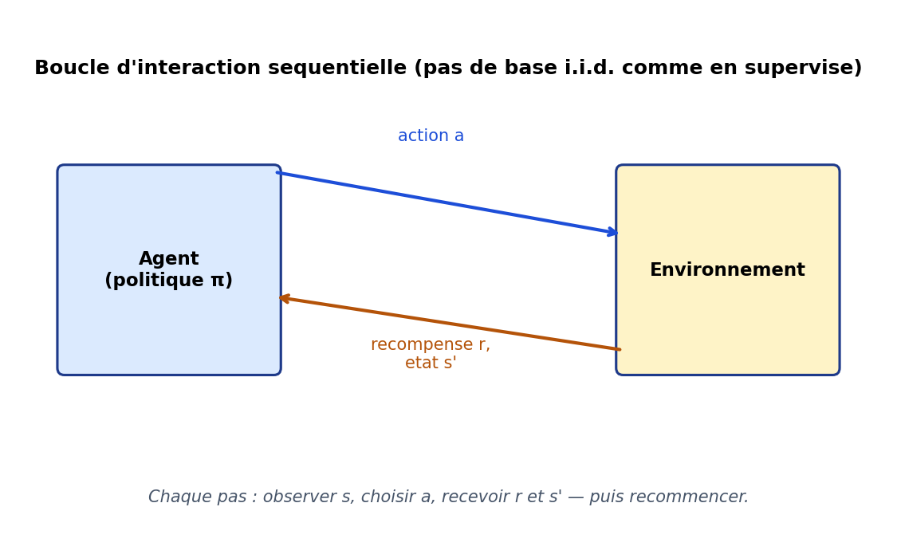
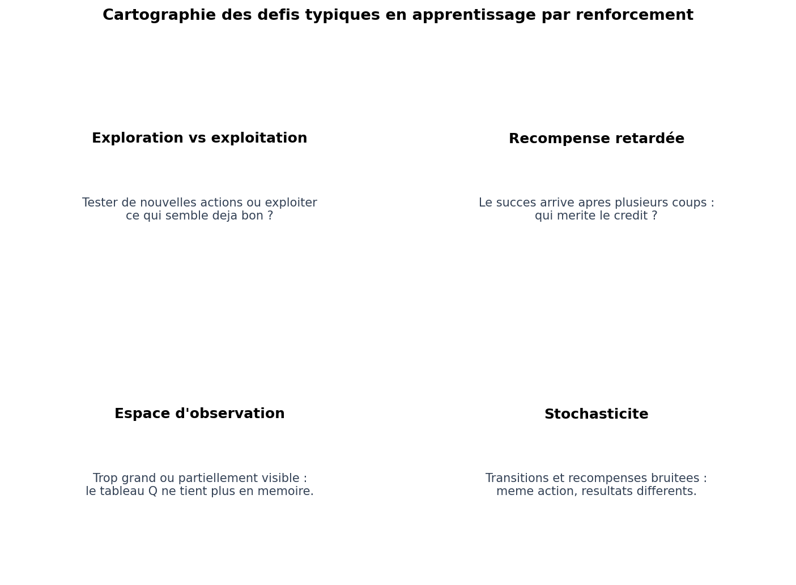

Dans le supervisé, on apprenait une fonction à partir d’exemples indépendants ; dans le non supervisé, on explorait la forme de X sans cible. L’apprentissage par renforcement (RL) introduit un agent qui interagit avec un environnement au fil du temps : à chaque pas, il choisit une action, reçoit une récompense (souvent retardée) et observe un nouvel état. Il n’y a pas de « fichier CSV complet » des bonnes réponses : la donnée se construit par essais et erreurs, comme un joueur qui progresse.
Les jeux vidéo ont longtemps servi de terrain d’expérimentation : d’Atari (Mnih et al., 2015, agent DQN) aux stratégies en temps réel, en passant par des RPG au tour par tour où chaque décision (attaque, soin, changement de créature) modifie l’état du combat de façon séquentielle. Pensez par analogie à un combat de type « Pokémon » : vous n’avez pas une étiquette « la bonne action pour cet écran » fournie d’office — vous apprenez par répétition ce qui fonctionne contre tel adversaire, avec des récompenses (PV perdus, statut infligé) qui ne résument la qualité d’une stratégie qu’après plusieurs tours. Ce retard entre action et succès est au cœur des difficultés du RL.
Ce n’est qu’un exemple culturel : en industrie, le même schéma apparaît en robotique (collisions rares mais coûteuses), logistique ou pilotage énergétique. La figure suivante fixe la boucle minimale à avoir en tête.
Figure : interaction agent ↔ environnement (actions, récompenses, nouvel état)

Avant d’entrer dans une méthode précise, il est utile de situer où les algorithmes peuvent buter — sans exhaustivité, mais pour cadrer vos attentes lorsque vous lirez la littérature (exploration, généralisation, stabilité…).
Figure : quatre défis typiques

On modélise souvent le problème comme un processus de décision markovien (MDP) : l’état suivant et la récompense dépendent de l’état courant et de l’action (propriété de Markov — le futur conditionnel au présent ne dépend pas du passé plus loin). Une politique π(a|s) indique comment choisir les actions (souvent de façon stochastique en pratique). L’objectif est de maximiser une somme (discounted) des récompenses : Gt = Rt+1 + γ Rt+2 + γ²Rt+3 + … avec un facteur γ ∈ [0, 1] qui pèse l’avenir.
Les familles d’algorithmes sont nombreuses : recherche de politique (policy gradients), acteur–critique, méthodes basées sur un modèle de transitions, ou encore approches sans modèle (model-free) qui estiment directement des valeurs d’actions ou d’états à partir d’échantillons. Dans la suite, nous ne développons qu’une brique historique et pédagogique : le Q-learning tabulaire.
On note Q(s, a) la valeur d’action : espérance du retour cumulé actualisé si l’on commence par prendre l’action a dans l’état s, puis se comporte de façon optimale ensuite. Lorsque l’espace d’états et d’actions est petit et discret, on peut stocker Q dans un tableau et le mettre à jour au fil des interactions — c’est le Q-learning dans sa forme d’origine (Watkins, 1989).
À chaque transition observée (s, a, r, s′), on corrige Q(s, a) pour se rapprocher de la cible r + γ maxa′ Q(s′, a′) (si s′ n’est pas terminal). C’est une règle de différence temporelle (TD) ; la mise à jour « tire » la valeur courante vers cette cible avec un pas α :
Figure : règle de mise à jour du Q-learning

Lecture intuitive : si après avoir fait a dans s vous recevez une récompense r et atterrissez dans un état s′ où « le mieux qu’on puisse encore espérer » vaut max Q(s′, ·), alors la valeur de (s, a) devrait refléter r + γ fois cette meilleure suite. L’erreur (TD error) entre cette cible et l’ancienne estimation guide la correction.
Algorithme (esprit, version tabulaire) :
Le Q-learning est dit off-policy au sens où la cible utilise maxa′ Q(s′, a′) (politique greedy pour l’évaluation), même si l’exploration suit encore une politique mouvante (par ex. ε-greedy).
Figure : petite grille « monde » (départ S, but G avec récompense positive)

Figure : illustration — après entraînement simulé, maxa Q(s, a) par case (couleurs)

Sur cette grille jouet, les valeurs élevées se concentrent logiquement près de l’objectif : le Q-learning tabulaire « remonte » la valeur des états menant au but. Sur un problème réel à grande dimension, le tableau explose : on remplace alors Q par une fonction approximée — typiquement un réseau de neurones (DQN et dérivés), ce qui relie cette section au § 6.